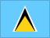

Saint Lucia
History
Associated State tied the territory into a wider political structure.
Saint Lucia became independent from the United Kingdom, marking a key step in modern statehood.
Short facts
RegionCaribbean
LanguageEnglish
Time zoneAST (UTC-4)
Drives onLeft
Worth seeing
- The Pitons: Twin volcanic spires rising from the sea - a UNESCO World Heritage landscape.
- Sulphur Springs: The world's only drive-in volcano with bubbling mud pools and steam vents.
- Marigot Bay: A stunning natural harbour described as one of the Caribbean's most beautiful.
Planning questions
What is Saint Lucia known for?The Pitons, Sulphur Springs, Marigot Bay.
What is the capital?Castries.
Which language is useful?English.
When is the national day?22 February.
How should I browse it here?Start with the facts, jump to linked cities, then check events and topics.
Upcoming events
No future Saint Lucia-linked events are active in the current dataset.
Food & drink
 Street food
Street food Pina colada
Pina coladaKnown for
The PitonsSulphur SpringsMarigot BayCastriesStreet foodPina colada
 Music & Culture
Music & Culture Caribbean coastlines
Caribbean coastlines